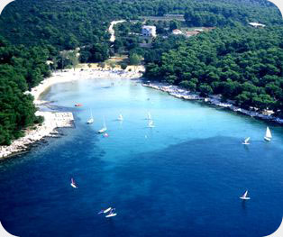

Apartmány Punta
Pakoštane

Podnebí
Podnebí je v tomto kraji mediteranské. Krátké zimy a dlouhá teplá lěta s osvěžujícím vétříkem charakteristické jsou za všechna pŕimoŕská místa na stŕednim Jadranu.
Teploty moře jsou příznivé ke koupání v širokém období od konce května do začatku řijna, proto se více hostů rozhodne k pobytu v předsezoně nebo posezoně a timto se vyhnou letní zácpě.
Podrobné poznamky o podnebí a ročnímu pohybu teploty moře může najit na stránkách hidrometeorologického závodu:
Pakoštane
Umísténo v samém středu jaderského pobřeží, diky jedinéčné poloze mezi mořem a Vranským jezeŕem, obklopeno přírodními krásami národnich parků. Pakoštane svým vzehledem a šarmem malého dalmatského města může být důvodem pro vaše navštivení.
Bezprostŕední blizkost zadarského a splitkého letiště umnožňuje rychlé cestování do této oblasti. Dobré spojení s evropskou sinlniční sití a pravidelné trajektové linky s Italií jsou důvodem proč je Pakoštane lákavou destinací.

V blahodárnostech stŕedomořské přírody a kráse pakoštanské riviéry každý může nalézt svůj koutek letinho ráje: děti ve hře v pisku, dospělí ve stínu borovicového lesa a zamilovaní ve skrytých zátokách blízkých ostrůvků.
Gurmáni si mohou libovat v domácich specijalitách: sýru, pršutu, jehněčim a milovníci mořských plodů v čerstvých rybách, mušlích, racích a vynikajících dalmatských vínech.
Pakoštane svým hostům skýtá nezapomenutelný letní zážitek a vzpominku na vůni moře a starého borovického lesa.
Kromé koupání a apalování se v Pakoštane hostům nabízí aktivní dovolená prostřednictvím bohaté nabídky sportovních a rekreačnich aktivit v turistckých osadách nebo v místnich sportovních oddílech. Obzvláštˇatraktivní jsou výlty do nedalekých národnich parků a parků přírody.
Palkoštanské večery plné zvuků hudby a písní, neodolatelných vůní z restaurací a konob (vinných sklipků), opojení z kvalitinich vin, spokojených tváří a úsmévů, zůstávají hostovi v trvalé památce. Mnozí z nich se vracejí Každoročně.

Vítáme Vás v Pakoštane !